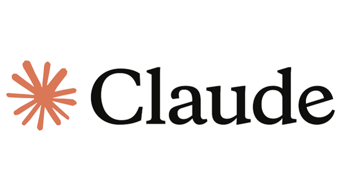
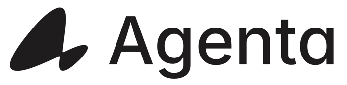

Question
Scroll to hear each of them.
Click an image to open it full size.
Engineers need a faster way to approve confirm AI-generated work.
Engineers who answer for AI-assisted work need to confirm what the AI did against the spec it was given, because they see only the result and the AI’s own summary.
ROLE
They may be a developer, lead, tester, or handoff partner, but their common responsibility is deciding whether the work is ready to move forward.
GOAL
- Confirm the output against the spec
- Understand what changed
- Catch deviations before they ship
- Remain responsible for the final decision
01 / BEHAVIORS
- Reads the AI’s summary
- Reviews changed files
- Rechecks based on risk
02 / NEEDS
- What did the AI leave out?
- Does it actually match the spec?
- Can I explain and defend the result?
03 / PAIN POINTS
- Reviewing everything doesn’t scale
- AI can be confident while being wrong
- Important deviations can remain unseen


Chapter 03 · Ecosystem
Mapping out the problem
I mapped the ecosystem around one goal, verifying AI-assisted work. People and organizations sit on the outer rings, the tools and interactions around them come next, and the needs sit closest to the goal. Four quadrants follow the life of a change: define the spec, delegate to the AI, review the output, sign off.
The experience wasn’t isolated to the senior engineer doing the review. It was shaped by the people and tools around them.
Quadrant 01
Define the spec
The product manager writes the brief and spec in the ticket, leadership sets the vision, and the designer attaches the design. A senior engineer checks cross-team dependencies and approvals. The work lives in Jira and ADO. Two needs start here: know exactly what was asked, and keep the spec linked to the ticket.
Quadrant 02
Delegate to the AI
The senior engineer prompts the agent, sets guardrails and lets it write code and tests, using Claude, Claude Code, Cursor, Copilot or IBM’s Bob, with read-only Slack context through MCP. An engineering manager oversees the guardrails. The needs here are knowing the AI’s scope, controlling what it may touch, and getting the same output every time.
Quadrant 03
Review the output
The senior engineer and a PR reviewer read the AI’s summary, review changed files and diffs, and compare the result against the spec, in the GitHub PR view, Cursor and Claude. The needs are knowing what the AI left out of its summary, seeing every change, and knowing why it chose this approach.
Quadrant 04
Sign off, own it
The head tester runs the test suite and hooks. The senior engineer signs off or sends it back to the AI, and records what the AI did and who checked it. Engineering managers receive the sign-off. The needs here are trusting the output enough to sign, catching deviations from the spec first, and being able to explain what happened when asked.
Across all four
Twelve needs sit closest to the goal
They run across all four quadrants: know exactly what was asked, know what the AI left out of its summary, see every change, catch deviations from the spec first, keep the spec linked to the ticket.
What this changed
Review isn’t where it starts
If the spec is unclear, drifts from the ticket, or isn’t what the AI was given, the reviewer is checking against a moving target.
The first fix has to happen before review begins.
Chapter 03 · Ecosystem
Journey map
The experience today
How a senior engineer gets AI-assisted work from ticket to release, and where it hurts along the way.
Phase 1 of 5
Plan & Define
Turn the ticket into a spec the AI can work from: the what and why, acceptance criteria, and a definition of done.
Phase 2 of 5
AI Executes
Get the change built quickly while keeping the AI inside its boundaries.
Phase 3 of 5
Verify the Work
Confirm what the AI actually did against the spec, beyond what its own summary says.
Phase 4 of 5
Review & Sign Off
Decide what to accept or reject, and be ready to put my name on the result.
Phase 5 of 5
Release & Answer
Ship the change and be able to explain later what changed and why.
Chapter 04 · Journey map
Chapter 05 · The user model
I started with the wrong word
At this point I believed engineers needed a faster way to approve AI-generated work.
What the research said
They don’t need help approving
They need to confirm what the AI did against the spec they gave it, because they see only the result and the AI’s own summary.
How might we
The question I took into design
How might we help senior engineers confirm, line by line, what the AI did against the spec?
User model
The Accountable Reviewer
An engineer responsible for reviewing or shipping AI-assisted work. They use AI to accelerate development but remain accountable for the final result.
User story
As a senior engineer, I want…
to see what the AI left out of its summary compared to the spec, so that I can catch where the output differs from the spec before I have to answer for it.
Chapter 05 · The user model
Chapter 06 · Mind map
Mapping the pain points
I laid the pain points out on a mind map with the need at the center: engineers need to confirm what the AI did against the spec. From there it branches into four themes. Each theme runs to pain points, then consequences, then the interview evidence behind them.
Green bars mark evidence the interviews support. Grey bars mark evidence that supports it only partly. Hover or click a card to follow its branch.
Theme 01
Verification
Three pain points: spec deviations go undetected, the risk to future systems goes up, and the AI’s output and its own summary are biased. P1 puts his trust at 80 to 85 percent and still goes back to check.
Theme 02
Review burden: skimming and skipping
Engineers admit to skimming AI-assisted PRs, and some of what gets sent off doesn’t make sense.
Theme 02
Over-reliance and what the summary leaves out
People take the AI’s output and move on, and the summary never mentions every action. Reviewers miss what the summary skips, and gaps are found too late.
Theme 03
Traceability
Requirements can’t be verified confidently, and it’s hard to track impact. The consequences: more time spent reviewing and debugging, unexpected failures, and regressions that go unnoticed.
Theme 04
Visibility: late and hidden errors
Detection comes late, so fixing errors becomes more expensive, and hidden errors can make it into production.
Theme 04
Visibility: the black box
P2 and P5 describe the same black-box problem independently. Unintended changes can cause serious damage and are hard to undo.
What the map led to
Three ideas to test
Deviation detection, review depth detection, and what changed and why.
Chapter 06 · Mind map
Product analysis
Existing Tools in the Space
I compared Claude and Claude Code, Braintrust, and Agenta. Each one gives people a way to watch or control what an AI agent does, for developers and AI teams.
Claude / Claude Code
Control, inside the editor
Claude Code shows what it reads and writes, and an “Ask before editing” setting keeps the human in charge of each change.
Braintrust
Evidence of what happened
Braintrust lists every run as a trace, opens each one into a tree of steps, and charts cost, latency, and tokens over time.
Agenta
A trail across versions
Agenta lays each run out as spans and lets people annotate the result, so behavior can be followed from one version to the next.
Chapter 07 · Competitor analysis
Chapter 08 · Wireframes
From the whiteboard to the screens
I went to the whiteboard to sketch out my ideas and perfect my flow, adding features that serve my pain points and research question until I achieved one cohesive flow.
Originally I envisioned this as a simple feature within GitHub. But after critique, I knew I could push this further.
Chapter 08 · Wireframes